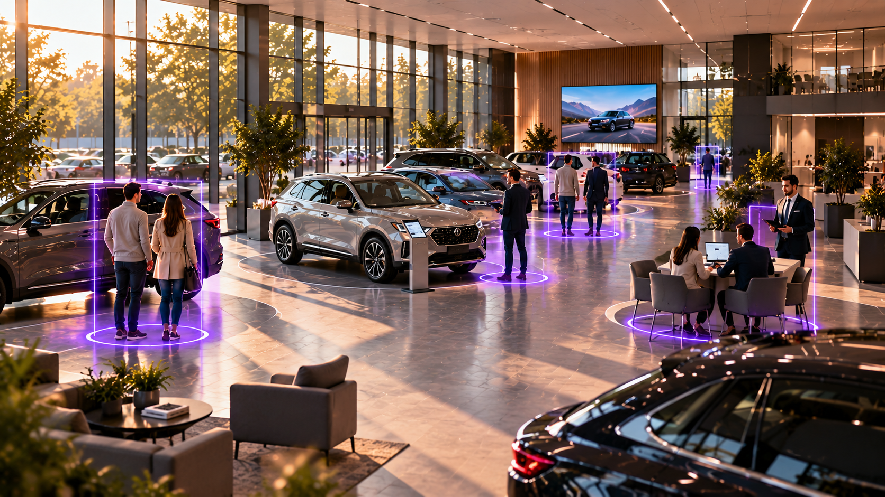

AUTOMOTIVE / CONTEXT 01 / 10
Lücken beim Kontakt erkennen. Reagieren. Veränderungen auswerten.
Geben Sie dem Händler einen praktischen Überblick darüber, wo Kontaktmöglichkeiten ungenutzt bleiben, wann die Personalabdeckung knapp ist und wie die Erkundung der Modelle in eine dokumentierte Nachverfolgung übergeht.
PFM verbindet Messkonzeption, operative Erkenntnisse und Auswertungen mit dem Händler. Geschäftliche Verbesserungen sind das Ziel; belegte Ergebnisse erfordern eine Ausgangsmessung und vergleichbare Folgemessungen.

AUTOMOTIVE / MEASURE 02 / 10
Eine verlässliche Grundlage beginnt am Eingang.
Zählen Sie ein- und ausgehende Passagen je ausgewähltem Eingang und Zeitfenster. Halten Sie Personen, wiederholte Passagen und abgeleitete Besuche getrennt. Gruppenbildung ist eine separate Analyse, die erst validiert werden muss.
Vorgeschlagene Optionen für die Eingangsmessung: Xovis oder Milesight. Produktauswahl, Abdeckung und Ausschluss von Mitarbeitenden müssen vor Ort geprüft werden.

AUTOMOTIVE / UNDERSTAND 03 / 10
Ausstellung, Service und Empfang erfüllen jeweils eine eigene Funktion.
Machen Sie sichtbar, welche definierten Zonen erreicht werden und wie sich die Wege fortsetzen. Die Servicezone ist ein möglicher Zielbereich; ihr Besuch belegt nicht, aus welchem Grund jemand gekommen ist.
Ein bestätigter Serviceanlass erfordert zusätzliche Termin- oder Registrierungsdaten. Gemischte und unbekannte Besuche müssen sichtbar bleiben.

AUTOMOTIVE / UNDERSTAND 04 / 10
Betrachten Sie die Wege durch den Ausstellungsbereich.
Erfassen Sie innerhalb der validierten Messabdeckung die Übergänge zwischen Modellzonen. Zeigen Sie, welche Kombinationen vorkommen, ohne einen Weg als persönliche Präferenz oder Kaufabsicht darzustellen.
Vorgeschlagene Erweiterung: LiDAR oder eine geeignete Xovis-3D-Konfiguration. Übergaben zwischen Sensoren, Abschirmungen und Sichtlinien müssen validiert werden.

AUTOMOTIVE / UNDERSTAND 05 / 10
Erkennen Sie Verweilmuster an den Modellen und wo sich weitere Untersuchungen lohnen.
Vergleichen Sie das Erreichen von Zonen und die Verweildauer, um die Platzierung von Modellen und den Schwerpunkt von Kampagnen zu prüfen. Ein festgelegter Verweilschwellenwert kann eine Kontaktmöglichkeit anzeigen; er belegt keine Kaufabsicht.
Legen Sie Zonengrenzen, Mindestverweildauer, Wiederholungsbesuche und vorbeiführende Wege fest, bevor Sie Modellvergleiche zeigen.

AUTOMOTIVE / UNDERSTAND 06 / 10
Machen Sie mögliche Kontaktlücken sichtbar, solange noch Zeit zum Reagieren bleibt.
Unterscheiden Sie drei Gruppen: Besuche, die die Verweildauerregel erfüllen und ein Kontaktsignal aufweisen; noch anwesende Besucher ohne Kontaktsignal; abgeschlossene Besuche ohne erkannten Kontaktindikator. Nutzen Sie diese Gruppen, um die Personalabdeckung zu prüfen und den Begrüßungsablauf zu verbessern.
In diesem Beispiel gilt ein Besuch als qualifizierend, wenn eine validierte Verweildauerregel erfüllt ist; damit ist kein Käuferstatus bestätigt. Für einen Kontakt sind eine validierte Unterscheidung von Mitarbeitenden sowie Regeln zu Nähe und Dauer erforderlich. Ein fehlendes Kontaktsignal beweist nicht, dass kein Gespräch stattgefunden hat.
AUTOMOTIVE / UNDERSTAND 07 / 10
Vom Ausstellungsbereich zum nächsten sichtbaren Schritt.
Messen Sie die Anwesenheit in der vereinbarten Zone am Beratungstisch und untersuchen Sie, was auf Kontaktsignale folgt. Die Anwesenheit am Beratungstisch belegt weder ein Angebot noch einen Lead oder einen Verkauf.
Ein Anteil der Kontakte, die zum Beratungstisch führen, setzt dieselben gültigen Bewegungsverläufe und denselben Beobachtungszeitraum voraus. Für ein Angebot ist ein separater CRM- oder DMS-Datensatz erforderlich.

AUTOMOTIVE / PROVE 08 / 10
Verknüpfen Sie Muster im Ausstellungsbereich mit Marketing und dokumentierter Nachverfolgung.
Vergleichen Sie Kampagnenzeiträume, Besucherzahlen, Verweildauer in Modellzonen und Kontaktabdeckung. Ergänzen Sie Leads, Angebote und Aufträge aus CRM/DMS, um den Prozess gemeinsam mit dem Händler auszuwerten.
Halten Sie Quellzeiträume, Kanäle und Definitionen aufeinander abgestimmt. Ohne gültige Zuordnung von Besuchen zu Kohorten bleiben CRM-Summen getrennte Datenreihen. Ein zeitlicher Zusammenhang mit einer Kampagne belegt keine Kampagnenwirkung.

AUTOMOTIVE / CONFIGURE 09 / 10
Beginnen Sie in kleinem Umfang und mit klaren Abhängigkeiten.
Wählen Sie Eingangszählung, Zonen im Ausstellungsbereich, validierte Unterscheidung von Mitarbeitenden und einen Benachrichtigungsablauf. Ergänzen Sie Dienstpläne, Kampagnenkalender und zulässige CRM-/DMS-Verknüpfungen, wenn die gewählte Fragestellung dies erfordert.
Telefon- oder Smartwatch-Benachrichtigungen sind laut bereitgestellter Produktinformation möglich. Voraussetzung sind ein kompatibler Zustellkanal, eine konfigurierte Regel und eine betriebliche Zuständigkeit. Im Rahmen dieser Prüfung wird weder eine Benachrichtigung noch eine Integration ausgelöst.
AUTOMOTIVE / ACT 10 / 10
Vereinbaren Sie die Reaktion, die verantwortliche Person und die Nachweise für eine Veränderung.
Testen Sie eine Begrüßungsbenachrichtigung, passen Sie die Personalabdeckung zu Spitzenzeiten an oder werten Sie die Kampagnennachverfolgung aus. PFM und der Händler vereinbaren eine Ausgangsmessung, eine verantwortliche Person und einen Auswertungstermin und vergleichen anschließend Kontakt- und Geschäftsindikatoren.
Vergleichen Sie passende Zeiträume und ausreichend ausgereifte Kohorten und berücksichtigen Sie dabei Kanal-Mix, Personalbesetzung und Saisonalität. Beschreiben Sie zunächst die beobachtete Veränderung; behaupten Sie eine Wirkung nur, wenn die Auswertung sie stützt. Systemaktionen in dieser Prüfung sind simuliert.
WAS ERHALTEN WIR?
Eine illustrative Übersicht zu Kennzahlen im Ausstellungsbereich für die tägliche Priorisierung und die gemeinsame Auswertung mit dem Händler.
Northstar Retail Group | Ausstellungsbereich A | 5. November 2026 | 09:00-14:05 MEZ | Illustrative Momentaufnahme
68 Besuche mit erfüllter Verweildauerregel = 40 mit Kontaktsignal + 22 abgeschlossene Besuche ohne Kontaktsignal + 6 weiterhin anwesende Besuche ohne Kontaktsignal. Kontaktabdeckung = 40 / 68 = 58,8 %, gerundet 59 %.
Modellzone 4: Verweildauer 2 Min. 05 Sek., kein erkanntes Kontaktsignal. Beispielschwelle: 90 Sek. Weiterleitung an ein konfiguriertes Telefon oder eine Smartwatch; hier wird keine Nachricht gesendet.
7 Angebote | 3 Aufträge. Illustrative Registrierungen während des Berichtstags. Dies sind getrennte Summen und keine Konversionen aus der heutigen Besuchskohorte.
Einheit: deduplizierte Personenbesuche, keine Gruppen und keine identifizierten Personen. Qualifizierend: mindestens 60 Sekunden in einer Modellzone; die Beispielregel belegt weder Käuferstatus noch Kaufabsicht. Kontakt: validierter Kontaktindikator auf Basis der Unterscheidung von Mitarbeitenden.
Fiktives Ausgabebeispiel, inspiriert vom Dashboard; unabhängig erstellte Beispielwerte. Keine Kundendaten, Benchmarks, Live-Daten oder garantierte Produktansicht. CRM-Stand: 14:00 MEZ; physischer Stand: 14:05 MEZ.
VON DER ERKENNTNIS ZUR MASSNAHME
Operative Benachrichtigungen und strukturierte Auswertungen mit dem Händler machen aus der Messung einen wiederholbaren Verbesserungsprozess.
Eine konfigurierte Verweildauerregel ohne Kontaktsignal kann Telefon oder Smartwatch benachrichtigen. Weisen Sie eine verfügbare Person zu, bestätigen Sie die Meldung, organisieren Sie die Betreuung und werten Sie die Reaktion aus.
Laut Produktinput bereits möglich. Prüfen Sie Kanal, Personalunterscheidung, Zonen, Latenz, Wiederholungsunterdrückung und Eskalation für die Installation. Dieses Beispiel ist simuliert.Nutzen Sie Stoßzeiten, Kontaktzeit und Zonenverweildauer für ein Personal- oder Layoutexperiment. Benennen Sie eine verantwortliche Person und vergleichen Sie dieselben Definitionen vor und nach der Änderung.
Behalten Sie Besuche ohne Kontaktsignal im Blick. Werten Sie die Zeit bis zum Kontakt bei Besuchen mit Kontaktsignal getrennt aus. Eine längere Verweildauer an einem Modell ist kein Beleg für Interesse.Verbinden Sie Kampagnenkalender, Kanalzuordnungen und freigegebene CRM-/DMS-Daten mit aggregierten Besuchsmustern. Prüfen Sie, ob sich Besuche, Modellverweildauer, Kontakt und dokumentierte Nachverfolgung gemeinsam verändern.
Verwenden Sie eine einwilligungsbasierte oder anderweitig zulässige Verknüpfung, Deduplizierung und einen festgelegten Ergebniszeitraum. Ohne Verknüpfung vergleichen Sie aggregierte Datenreihen; ordnen Sie keine einzelnen Aufträge zu und behaupten Sie keine kausale Steigerung.Vereinbaren Sie eine Ausgangsmessung, ein Maßnahmenprotokoll und einen Auswertungstermin. Nachgewiesene Ergebnisse erfordern vergleichbare Belege; Umsatzsteigerungen, Rendite (ROI) und Amortisationszeiten werden nicht versprochen.
OPTIONALE VERTIEFUNG / MOBILE & GEO
Ergänzen Sie Herkunftsgebiete, markenbezogene Besuchsmuster und aggregierte Besuche anderer Autohäuser, wenn eine geeignete Quelle diese Analyse unterstützt. Dies beschreibt ein Panel oder eine modellierte Grundgesamtheit, nicht jede am Eingang gezählte Person.
Verwenden Sie aggregierte Herkunftsgebiete und machen Sie die Quellpopulation, den Zeitraum und die Gebietsdefinition sichtbar. Verknüpfen Sie keine individuelle Herkunft mit einem Sensor-Bewegungsverlauf.
Besuche markenbezogener Standorte sind ein Kontextsignal. Der Begriff Markenaffinität setzt eine ausdrückliche Definition des Anbieters voraus; treffen Sie keine Aussage über Präferenz, Besitz oder Kaufabsicht.
Verfügbarkeit, Repräsentativität, Mindestfallzahlen und Standortzuordnung müssen mit dem Datenanbieter bestätigt werden. Deshalb enthält dieser Vorschlag hierzu weder eine Karte noch fiktive Prozentwerte.
Die bestehende Broschüre wurde nicht geändert. Diesem Vorschlag wurden keine Kundenergebnisse, Preise, Steigerungen, Benchmarks oder Live-Systemaktionen hinzugefügt.
Die Szenen oben zeigen eine bevorzugte Auswahl zur Prüfung. Alle unten gezeigten Bilder sind Kandidaten. Violette Markierungen sind konzeptionell und belegen weder Sensorabdeckung noch Identität oder Messleistung.


Das bereitgestellte Straßenmotiv mit Passanten bleibt außerhalb des Bereichs Automotive: Es zeigt Retail und unterstützt die Geschichte rund um das Autohaus nicht.